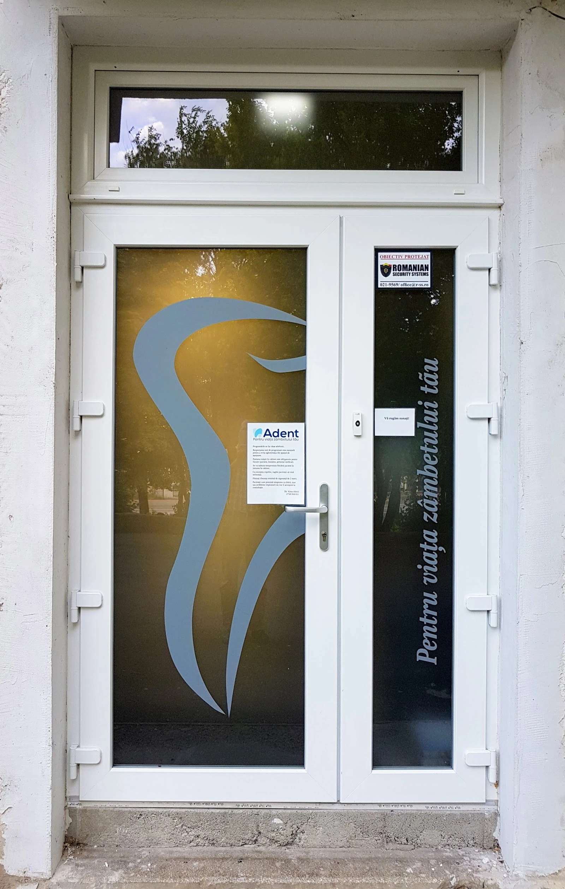

01{{veniți|come in|venha}}

{{Ajungi|You arrive|Chega}}
{{Bloc 1011, scara D–E. Ușa are dintele pe geamul mat.|Block 1011, stairwell D–E. The door has the tooth on frosted glass.|Bloco 1011, escada D–E. A porta tem o dente no vidro fosco.}}